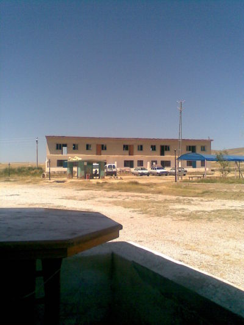
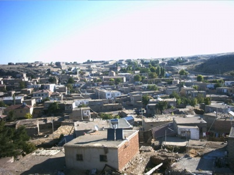
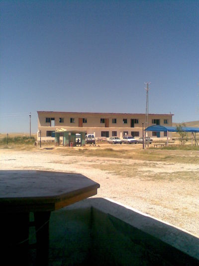
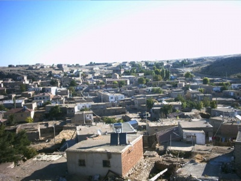

 
 Kasabamız tanıyalım
dikilitaş ismini kasabanın girişinde bulunan dikilitaş'dan almıştır. Kasabanın eski adı "Enehil" dir. Kasabada iki adet tarihi belli olmayan kilise bulunmaktadır. Mübadele öncesi burada 200 ortodoks aile ve 80 [[müslüman aile yaşıyormuş. Bundan bir iki asır önce buralardan İpek Yolu geçermiş. Suriye'den İstanbul'a giden kervancılar bu yolu kullanırmış. Kervancıların dinlenme yerlerinden biride bu kasabadır.
]Dikilitaş; Niğde-Kayseri yolu üzerinde merkeze 48Km uzaklıkta bir kasabadır.
Matematiksel konumu; 38° 6' 29N ve 35° 5' 29E meridyenleri arasında yer almaktadır.
Yakınındaki yerleşim yerleri; dundarlı.hacıbeyli.aytamas.dundarlı.aşlama.icmeli.elmalı.
Kasabamız Niğde-merkeze 48 kilometredir.Torosların iç kesimlere doğru oluşturduğu bir kasaba denilebilir.Yakındaki kasaba-köy yerleşmelerine bakılırsa kasabamız merkez konumundadır.Bu konumunu hastahane ve diğer insan ihtiyacına yönelik faaliyetler yapılabilir.
Kasabamız dağların(kayaların)arasında ovayı andıran bir görünüme sahiptir.Önündeki bağlar tepesi ise;kasabamız görünmese bile o tepeyi görenler orası Dikilitaş Kasabası kanısına varmaktadırlar.
Kasabamızda :
Un fabrikası,Sağlık ocağı, Mandıra,4 kahvehane,5 bakkali2 tarihi kilise,tarhi .eşme,berber,2tamir atölyesi, yer almaktadır.